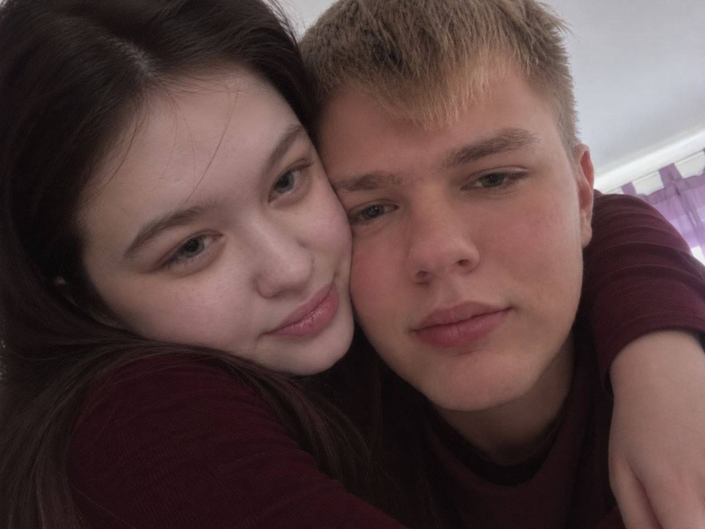

Киса, я тебя люблю.
И первое, что я хочу тебе сказать после нашего сегодняшнего разговора, — я не хочу с тобой расставаться. Мне очень жаль, что я дал тебе повод подумать, будто хочу тебя бросить.
Когда мы ссоримся, я особенно сильно чувствую, как боюсь тебя потерять. Сегодня мне хотелось услышать от тебя, что я тебе дорог, что ты тоже хочешь быть со мной. Мне стоило так и сказать тебе: «Киса, я боюсь тебя потерять. Можно я расскажу, что у меня на душе?» А я повёл себя так, что ты могла подумать, будто я сам хочу уйти. Это было неправильно. Прости меня.
Саша, мне стыдно и за другие моменты, когда я тебя обижал. Я обвинял тебя в том, в чём ты не была виновата, и давил на тебя. Ты заслуживала, чтобы я спокойно тебя выслушал. Мне жаль, что вместо этого тебе приходилось оправдываться передо мной. Я понимаю, что тебе тоже могло быть больно и что за своим страхом я упустил самое важное — каково в тот момент было тебе.
Киса, я хочу с тобой помириться. Мне хочется, чтобы рядом со мной ты могла сказать всё, что у тебя на душе, даже если мне будет трудно это услышать. В следующий раз, когда я чего-то не пойму, я хочу сначала спросить тебя и дать тебе договорить. А если мне станет страшно — сказать об этом прямо. Ты не должна догадываться, что со мной происходит, или доказывать мне, как сильно ты меня любишь.
Я выбрал для тебя нашу «Улыбку». Когда думаю о ней, вспоминаю строчку «То была улыбка, похожая на рай» и думаю о тебе. Мне захотелось собрать здесь наши фотографии, потому что я люблю эти мгновения с тобой. И мне хочется, чтобы у нас впереди было ещё много дней, которые мы потом будем вот так вспоминать вместе.
Я очень хочу, чтобы у нас снова всё наладилось. Когда захочешь рассказать, что ты сегодня чувствовала, я хочу тебя выслушать. А пока просто хочу, чтобы ты знала: я люблю тебя, киса.
Обнимаю тебя. ♡
